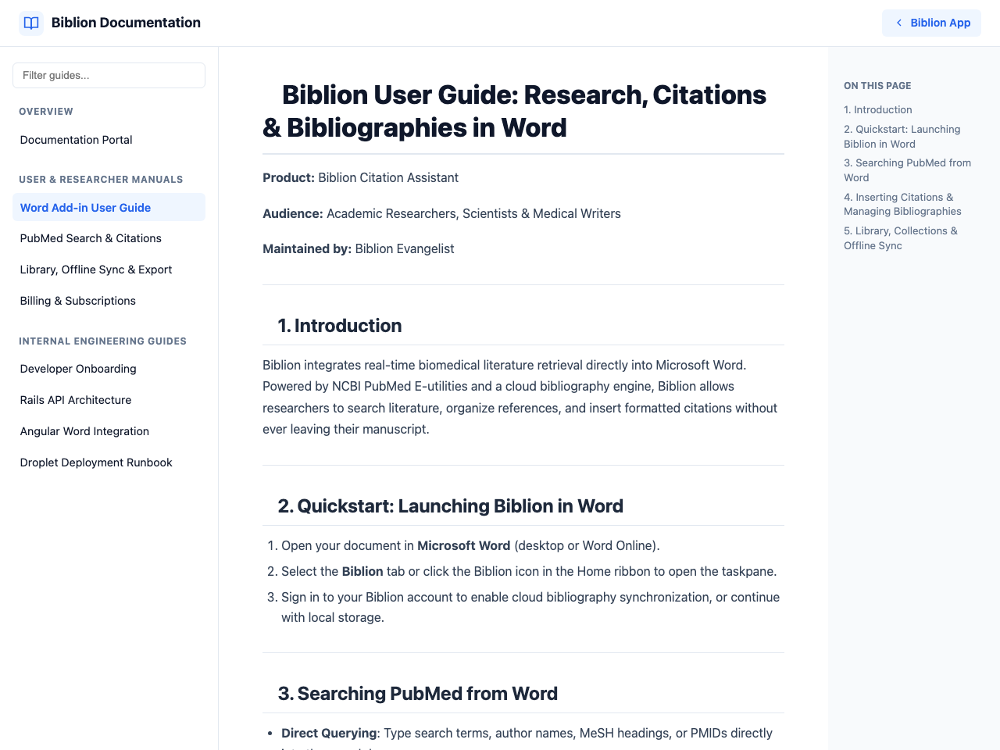

#Biblion User Guide: Research, Citations & Bibliographies
Product: Biblion Citation Assistant
Audience: Academic Researchers, Scientists & Medical Writers
Maintained by: Documentation Writer
#1. What Is Biblion?
Biblion is a literature search and citation tool for biomedical researchers. It runs as a taskpane inside Microsoft Word and as a standalone web app. Search PubMed, read abstracts, keep a personal library, and insert correctly formatted citations and a reference list without leaving your manuscript.

#2. Choose Your Task
| I want to... | Read |
|---|---|
| Find papers and read abstracts | Searching PubMed & Citing Articles |
| Write better searches with AI | AI Query Rewriter |
| Format citations and the reference list | Citation Styles & Automatic Bibliographies |
| See what a sentence in my manuscript cites | Live References |
| Organise, annotate and export my papers | My Library, Collections & Sync |
| Create an account or reset my password | Account & Sign-In |
| Understand my trial, billing or cancellation | Subscription & Billing |
| Use Biblion outside Word | Using Biblion in a Web Browser |
#3. Five-Minute Quickstart
- Open Biblion. In Word, open the Biblion taskpane. Or open Biblion in a browser.
- Sign in (optional but recommended). Click Sign In → Create Account. You get a 30-day free trial and cloud sync.
- Search. Type a topic, or click an example query, then search.
- Read. Flip a card with its Abstract button.
- Keep. Click Save to Library on papers you want.
- Cite. In Word, place your cursor in the manuscript and click Insert Citation. In a browser, click Copy Citation and paste.
- Format. In Word, pick your journal's style from the style selector. Biblion reformats everything.
#4. The Main Areas of Biblion
- Search: PubMed / MEDLINE search
- My Library: saved articles, collections, tags, notes, export
- Live References: citations at your cursor (Word only)
- About & Support: help, documentation guides, contact
- Your name menu: Subscription & Billing, Edit Account, AI Settings (BYOK), Sign Out
#5. Help
The About & Support page links to all guides and contact details. The same guides are available from your name menu → Documentation Guides.